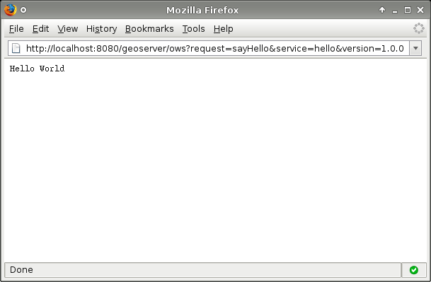

Implementing a simple OWS service¶
This section explains How to Create a Simple GeoServer OWS service for GeoServer using the following scenario. The service should supply a capabilities document which advertises a single operation called "sayHello". The result of a sayHello operation is the simple string "Hello World".
Setup¶
The first step in creating our plug-in is setting up a maven project for it. The project will be called "hello".
- Create a new directory called
helloanywhere on your file system. - Add a maven pom called
pom.xmlto thehellodirectory:
<?xml version="1.0" encoding="ISO-8859-1"?>
<project xmlns="http://maven.apache.org/POM/4.0.0" xmlns:xsi="http://www.w3.org/2001/XMLSchema-instance"
xsi:schemaLocation="http://maven.apache.org/POM/4.0.0 http://maven.apache.org/maven-v4_0_0.xsd">
<modelVersion>4.0.0</modelVersion>
<!-- set parent pom to community pom -->
<parent>
<groupId>org.geoserver</groupId>
<artifactId>community</artifactId>
<version>2.28-SNAPSHOT</version> <!-- change this to the proper GeoServer version -->
</parent>
<groupId>org.geoserver</groupId>
<artifactId>hello</artifactId>
<packaging>jar</packaging>
<version>1.0</version>
<name>Hello World Service Module</name>
<!-- declare dependency on geoserver main -->
<dependencies>
<dependency>
<groupId>org.geoserver</groupId>
<artifactId>gs-main</artifactId>
<version>2.28-SNAPSHOT</version> <!-- change this to the proper GeoServer version -->
</dependency>
</dependencies>
<repositories>
<repository>
<id>boundless</id>
<name>Boundless Maven Repository</name>
<url>https://repo.boundlessgeo.com/snapshot</url>
<snapshots>
<enabled>true</enabled>
</snapshots>
</repository>
</repositories>
</project>
- Create a java source directory,
src/main/javaunder thehellodirectory:hello/ + pom.xml + src/ + main/ + java/
Creating the Plug-in¶
A plug-in is a collection of extensions realized as spring beans. In this example the extension point of interest is a HelloWorld POJO (Plain Old Java Object).
- Create a class called HelloWorld:
import java.io.IOException;
import javax.servlet.ServletException;
import javax.servlet.http.HttpServletRequest;
import javax.servlet.http.HttpServletResponse;
public class HelloWorld {
public HelloWorld() {
// Do nothing
}
public void sayHello(HttpServletRequest request, HttpServletResponse response)
throws ServletException, IOException {
response.getOutputStream().write("Hello World".getBytes());
}
}
The service is relatively simple. It provides a method sayHello(..) which takes a HttpServletRequest, and a HttpServletResponse. The parameter list for this function is automatically discovered by the org.geoserver.ows.Dispatcher.
- Create an
applicationContext.xmldeclaring the above class as a bean.
<?xml version="1.0" encoding="UTF-8"?>
<!DOCTYPE beans PUBLIC "-//SPRING//DTD BEAN//EN" "http://www.springframework.org/dtd/spring-beans.dtd">
<beans>
<!-- Spring will reference the instance of the HelloWorld class
by the id name "helloService" -->
<bean id="helloService" class="HelloWorld"/>
<!-- This creates a Service descriptor, which allows the org.geoserver.ows.Dispatcher
to locate it. -->
<bean id="helloService-1.0.0" class="org.geoserver.platform.Service">
<!-- used to reference the service in the URL -->
<constructor-arg index="0" value="hello"/>
<!-- our actual service POJO defined previously -->
<constructor-arg index="1" ref="helloService"/>
<!-- a version number for this service -->
<constructor-arg index="2" value="1.0.0"/>
<!-- a list of functions for this service -->
<constructor-arg index="3">
<list>
<value>sayHello</value>
</list>
</constructor-arg>
</bean>
</beans>
At this point the hello project should look like the following:
Trying it Out¶
- Install the
hellomodule:
[INFO] Scanning for projects...
[INFO]
[INFO] ------------------------------------------------------------------------
[INFO] Building Hello World Service Module 1.0
[INFO] ------------------------------------------------------------------------
[INFO]
[INFO] --- maven-clean-plugin:2.5:clean (default-clean) @ hello ---
[INFO] Deleting /home/bradh/devel/geoserver/doc/en/developer/source/programming-guide/ows-services/hello/target
[INFO]
[INFO] --- cobertura-maven-plugin:2.6:clean (default) @ hello ---
[INFO]
[INFO] --- git-commit-id-plugin:2.0.4:revision (default) @ hello ---
[INFO] [GitCommitIdMojo] .git directory could not be found, skipping execution
[INFO]
[INFO] --- maven-resources-plugin:2.6:resources (default-resources) @ hello ---
[INFO] Using 'UTF-8' encoding to copy filtered resources.
[INFO] Copying 1 resource
[INFO] skip non existing resourceDirectory /home/bradh/devel/geoserver/doc/en/developer/source/programming-guide/ows-services/hello/src/main/resources
[INFO]
[INFO] --- maven-compiler-plugin:2.3.2:compile (default-compile) @ hello ---
[INFO] Compiling 1 source file to /home/bradh/devel/geoserver/doc/en/developer/source/programming-guide/ows-services/hello/target/classes
[INFO]
[INFO] --- maven-resources-plugin:2.6:testResources (default-testResources) @ hello ---
[INFO] Using 'UTF-8' encoding to copy filtered resources.
[INFO] skip non existing resourceDirectory /home/bradh/devel/geoserver/doc/en/developer/source/programming-guide/ows-services/hello/src/test/java
[INFO] skip non existing resourceDirectory /home/bradh/devel/geoserver/doc/en/developer/source/programming-guide/ows-services/hello/src/test/resources
[INFO]
[INFO] --- maven-compiler-plugin:2.3.2:testCompile (default-testCompile) @ hello ---
[INFO] No sources to compile
[INFO]
[INFO] --- maven-surefire-plugin:2.12.3:test (default-test) @ hello ---
[INFO] No tests to run.
[INFO]
[INFO] --- maven-jar-plugin:2.4:jar (default-jar) @ hello ---
[INFO] Building jar: /home/bradh/devel/geoserver/doc/en/developer/source/programming-guide/ows-services/hello/target/hello-1.0.jar
[INFO]
[INFO] --- maven-jar-plugin:2.4:test-jar (default) @ hello ---
[WARNING] JAR will be empty - no content was marked for inclusion!
[INFO] Building jar: /home/bradh/devel/geoserver/doc/en/developer/source/programming-guide/ows-services/hello/target/hello-1.0-tests.jar
[INFO]
[INFO] >>> maven-source-plugin:2.2.1:jar (attach-sources) > generate-sources @ hello >>>
[INFO]
[INFO] --- git-commit-id-plugin:2.0.4:revision (default) @ hello ---
[INFO] [GitCommitIdMojo] .git directory could not be found, skipping execution
[INFO]
[INFO] <<< maven-source-plugin:2.2.1:jar (attach-sources) < generate-sources @ hello <<<
[INFO]
[INFO] --- maven-source-plugin:2.2.1:jar (attach-sources) @ hello ---
[INFO] Building jar: /home/bradh/devel/geoserver/doc/en/developer/source/programming-guide/ows-services/hello/target/hello-1.0-sources.jar
[INFO]
[INFO] >>> maven-source-plugin:2.2.1:test-jar (attach-sources) > generate-sources @ hello >>>
[INFO]
[INFO] --- git-commit-id-plugin:2.0.4:revision (default) @ hello ---
[INFO] [GitCommitIdMojo] .git directory could not be found, skipping execution
[INFO]
[INFO] <<< maven-source-plugin:2.2.1:test-jar (attach-sources) < generate-sources @ hello <<<
[INFO]
[INFO] --- maven-source-plugin:2.2.1:test-jar (attach-sources) @ hello ---
[INFO] No sources in project. Archive not created.
[INFO]
[INFO] --- maven-install-plugin:2.4:install (default-install) @ hello ---
[INFO] Installing /home/bradh/devel/geoserver/doc/en/developer/source/programming-guide/ows-services/hello/target/hello-1.0.jar to /home/bradh/.m2/repository/org/geoserver/hello/1.0/hello-1.0.jar
[INFO] Installing /home/bradh/devel/geoserver/doc/en/developer/source/programming-guide/ows-services/hello/pom.xml to /home/bradh/.m2/repository/org/geoserver/hello/1.0/hello-1.0.pom
[INFO] Installing /home/bradh/devel/geoserver/doc/en/developer/source/programming-guide/ows-services/hello/target/hello-1.0-tests.jar to /home/bradh/.m2/repository/org/geoserver/hello/1.0/hello-1.0-tests.jar
[INFO] Installing /home/bradh/devel/geoserver/doc/en/developer/source/programming-guide/ows-services/hello/target/hello-1.0-sources.jar to /home/bradh/.m2/repository/org/geoserver/hello/1.0/hello-1.0-sources.jar
[INFO] ------------------------------------------------------------------------
[INFO] BUILD SUCCESS
[INFO] ------------------------------------------------------------------------
[INFO] Total time: 2.473 s
[INFO] Finished at: 2015-10-20T10:14:16+11:00
[INFO] Final Memory: 23M/589M
[INFO] ------------------------------------------------------------------------
-
Next we need to make sure
hello-1.0.jaris included when we run GeoServer:- If you are running a GeoServer in Tomcat, copy
target/hello-1.0.jarintowebapps/geoserver/WEB-INF/lib(just like we manually install extensions or community modules).
Restart GeoServer to pick up the change.
- If running with Eclipse using maven eclipse plugin, the easiest approach is edit the
web-app/pom.xmlwith the following dependency:
<dependency> <groupId>org.geoserver</groupId> <artifactId>hello</artifactId> <version>1.0-SNAPSHOT</version> </dependency>After editing
webapps/pom.xmlwe need runmvn eclipse:eclipse, and then from Eclipse right click on web-app project and Refresh for the IDE to notice the change.- If and IDE like IntellJ, Eclipse M2 Maven plugin or NetBeans refresh the project so it picks up the changes to
pom.xml
- If you are running a GeoServer in Tomcat, copy
-
Restart GeoServer and visit:
http://<host>/geoserver/ows?request=sayHello&service=hello&version=1.0.0request
: the method we defined in our service
service
: the name we passed to the Service descriptor in the applicationContext.xml
version
: the version we passed to the Service descriptor in the applicationContext.xml

Note
A common pitfall is to bundle an extension without the applicationContext.xml file. If you receive the error message "No service: ( hello )" this is potentially the case. To ensure the file is present inspect the contents of the hello jar present in the target directory of the hello module.
Bundling with Web Module¶
An alternative to plugging into an existing installation is to build a complete GeoServer war that includes the custom hello plugin. To achieve this a new dependency is declared from the core web/app module on the new plugin project. This requires building GeoServer from sources.
-
Build GeoServer from sources as described here.
-
Install the
hellomodule as above. -
Edit
web/app/pom.xmland add the following dependency: -
Install the
web/appmodule
A GeoServer war including the hello extension should now be present in the target directory.
Note
To verify the plugin was bundled properly unpack geoserver.war and inspect the contents of the WEB-INF/lib directory and ensure the hello jar is present.
Running from Source¶
During development the most convenient way to work with the extension is to run it directly from sources.
-
Setup GeoServer in eclipse as described here.
-
Move the hello module into the GeoServer source tree under the
communityroot module. -
Edit the
community/pom.xmland add a new profile:<profile> <id>hello</id> <modules> <module>hello</module> </modules> </profile> -
If not already done, edit
web/app/pom.xmland add the following dependency: -
From the root of the GeoServer source tree run the following maven command:
- In eclipse import the new hello module and refresh all modules.
- In the
web-appmodule run theStart.javamain class to start GeoServer.
Note
Ensure that the web-app module in eclipse depends on the newly imported hello module. This can be done by inspecting the web-app module properties and ensuring the hello module is a project dependency.